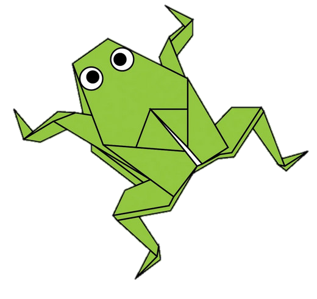
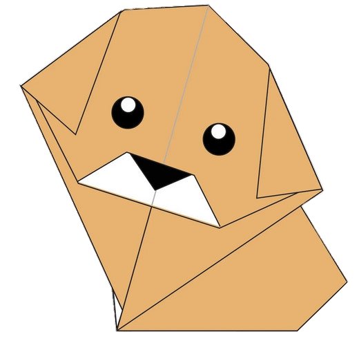

Camello:
Camello:
✨(っ◔︣◡◔᷅)っc(◕︣◡◕᷅c)✨
1.- Las orejas de un camello son peludas.
2.- El camello puede moverse fácilmente
por la arena gracias a sus patas especialmente
diseñadas para ello.
3.- Cuando encuentran agua, beberán la
mayor cantidad posible.

Camaleon:
Camaleon:
(ɔ ≖.≖)ɔ c(≖.≖ c)
1.- Los camaleones son reptiles que forman
parte de la familia de la iguana.
2.- Cambiar el color de la piel es una parte
importante de la comunicación entre los
camaleones.
3.- Cambiar el color de la piel es una parte
importante de la comunicación entre los
camaleones.

Paloma:
Paloma:
(ɔ ◡́.◡̀)ɔ ┏🍟--🍔┑ c(^◡^ c)
1.- Las palomas son animales increiblemente
complejas e inteligentes.
2.- Las palomas son reconocidas por sus
excepcionales habilidades de orientacion.
3.- Las palomas son tienen una exelente
capacidad auditiva.

Osos de peluche:
Osos de peluche:
ヽ(✿◠‿◠)人(◡‿◡✿)ノ
1.- La cancion de panic de los ositos de
peluche se llamaba originalmente the
teddy bear two step.
2.- Winnie the pooh se baso en un oso real.

Pandas:
Pandas:
(っ＾▿＾)۶🍸🌟🍺٩(˘◡˘ )
1.- Los pandas gigantes son buenos
trepando arboles y tambien pueden
nadar.
2.- Los pandas pasan de rosa a blanco y
negro [0 marron].
3.- los pandas son "flojos": comer y dormir
les alegra el dia.

Rana:
^( '-' )^ v( ‘.’ )v
1.- Un gramo de la toxina producida por la
piel de la rana dardo venenosa dorada,
podria matar a 100.000 personas.
2.- Hay una rana en indonesia que no tiene
pulmones; respira completamente a
traves de su piel.
Rana:
Rana:
^( '-' )^ v( ‘.’ )v
1.- Un gramo de la toxina producida por la
piel de la rana dardo venenosa dorada,
podria matar a 100.000 personas.
2.- Hay una rana en indonesia que no tiene
pulmones; respira completamente a
traves de su piel.

Cigarra:
Cigarra:
♪┏(・o･)┛♪┗ ( ･o･) ┓♪
1.- Todas las especies de cigarras en
America del norte proviene de un
ancestro comun.
2.- la especie de cigarra cambia de un ciclo
de 13 años a un ciclo de 17 años.

Perros:
ヽ(≧◡≦)人(´∇｀)ノ
1.- Las narices de los perros estan mojadas
para ayudar a absorber los quimicos
aromaticos.
2.- La cancion de los beatles "A day in the
life" tiene una frecuencia que solo los
perros pueden escuchar.
3.- Un ciego y su perro guia caminaron por
el sendero de los apalaches.
Perros:
Perros:
ヽ(≧◡≦)人(´∇｀)ノ
1.- Las narices de los perros estan mojadas
para ayudar a absorber los quimicos
aromaticos.
2.- La cancion de los beatles "A day in the
life" tiene una frecuencia que solo los
perros pueden escuchar.
3.- Un ciego y su perro guia caminaron por
el sendero de los apalaches.